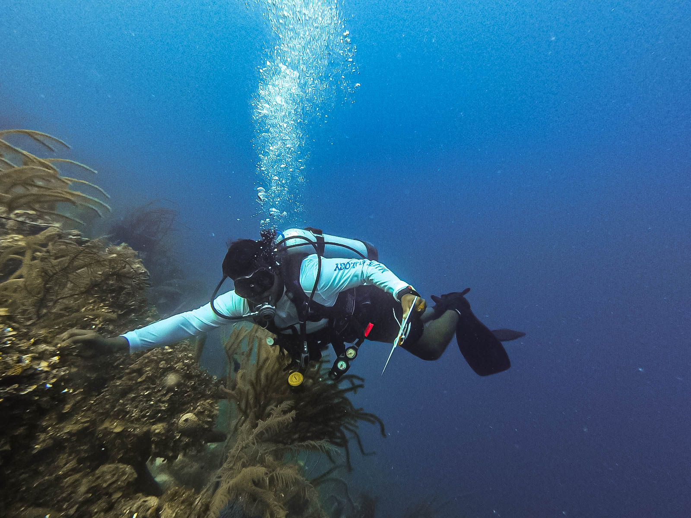
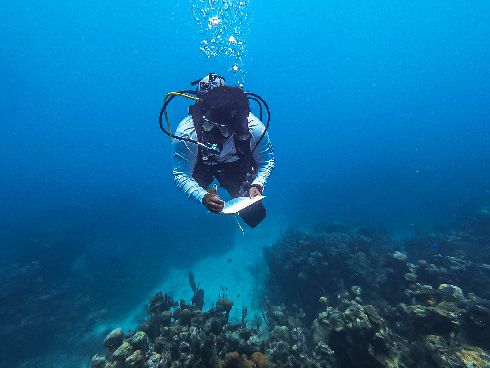
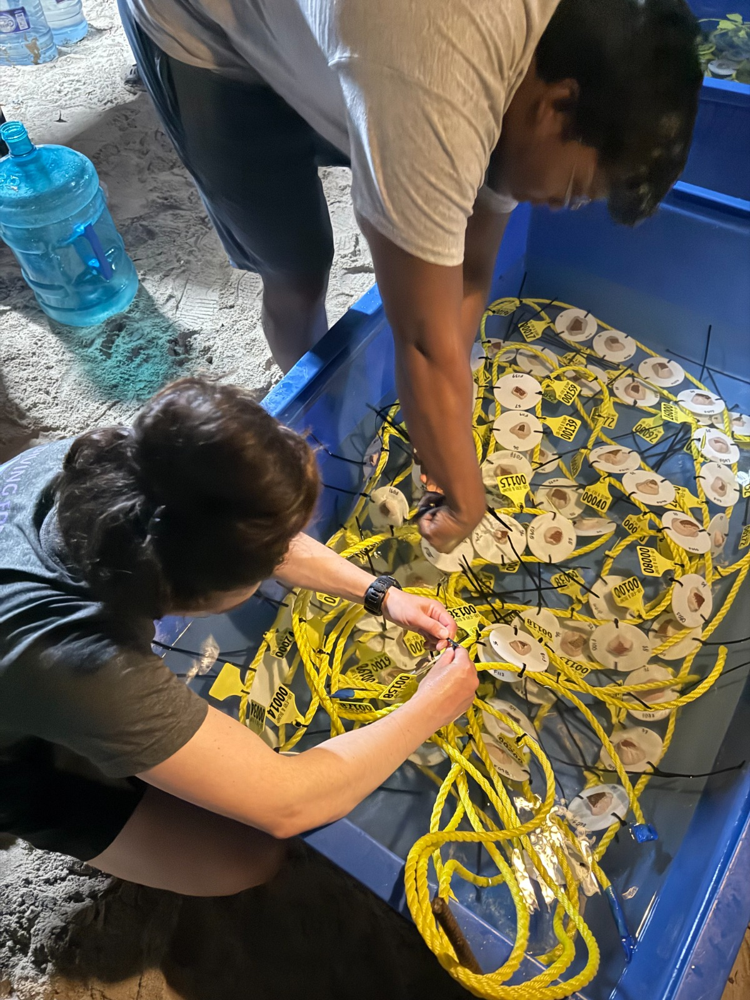
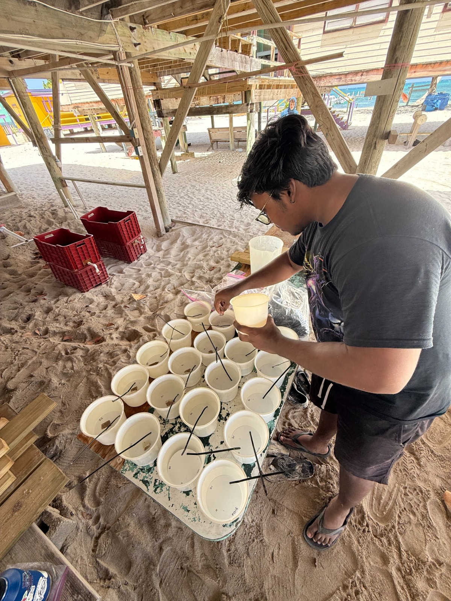

Profile
I’m a Belizean marine biologist interested in coral reef ecology, fisheries science, and how field data can inform conservation.

Background
My marine biology studies at the University of Belize included research on how freezing and thawing affect Caribbean spiny lobster measurements. I used R to analyze those changes and explore their implications for fisheries size assessments.
Growing up in Belize City and visiting the Belize River Valley helped spark my interest in aquatic ecosystems. I returned to that landscape for Following the Water, an ArcGIS StoryMap exploring what the evidence can tell us about the Belize River fish kill.
View my CV for more on my fieldwork, research, and data analysis.
Fieldwork in Belize
Wildlife Conservation Society, Belize Program

University of Belize Environmental Research Institute
I assisted with an ongoing study of massive starlet coral (Siderastrea siderea). The team transplants fragments from reef habitats into mangroves and from mangroves onto the reef, then tracks their growth and development over one year. I helped organize the coral fragments by their assigned sample codes.

